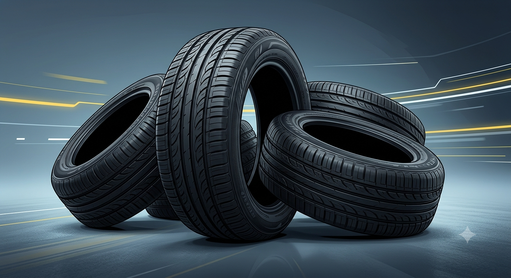
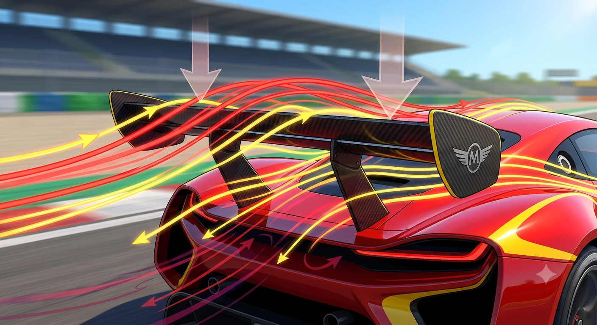

O Primeiro Carro da História
Por: João Gabriel Ribeiro dos Santos
O Benz Patent-Motorwagen, criado por Karl Benz em 1886, é considerado o primeiro automóvel movido a gasolina do mundo. Ele tinha apenas três rodas!
Fonte: História do Automóvel
Compartilhando os melhores fatos e curiosidades sobre o mundo dos carros!
Por: João Gabriel Ribeiro dos Santos
O Benz Patent-Motorwagen, criado por Karl Benz em 1886, é considerado o primeiro automóvel movido a gasolina do mundo. Ele tinha apenas três rodas!
Fonte: História do Automóvel
Por: João Gabriel Ribeiro dos Santos
Supercarros modernos conseguem ultrapassar a barreira dos 400 km/h! Modelos de alta performance usam fibra de carbono para ficarem extremamente leves e ágeis.
Fonte: Mundo Automotivo

Por:João Gabriel Ribeiro dos Santos
Originalmente a borracha natural é branca! Os pneus ganharam a cor preta porque a indústria começou a adicionar negro de fumo para aumentar a durabilidade e resistência do material.
Fonte: AutoCurioso
Por: João Gabriel Ribeiro dos Santos
Apesar de parecerem uma novidade recente, os primeiros carros elétricos surgiram ainda no século XIX! Hoje eles voltam a liderar o futuro com emissão zero de poluentes.
Fonte: TechRodas
Por: João Gabriel Ribeiro dos Santos
Muitas das tecnologias usadas nos carros de passeio diários, como freios ABS, câmbio borboleta e controle de tração, foram desenvolvidas e testadas nas pistas da F1.
Fonte: Gearhead Gazette

Por: João Gabriel Ribeiro dos Santos
O aerofólio não serve apenas para deixar o carro bonito! Ele gera força descendente (downforce), empurrando o carro contra o solo para aumentar a estabilidade em curvas rápidas.
Fonte: Engenharia de Pista